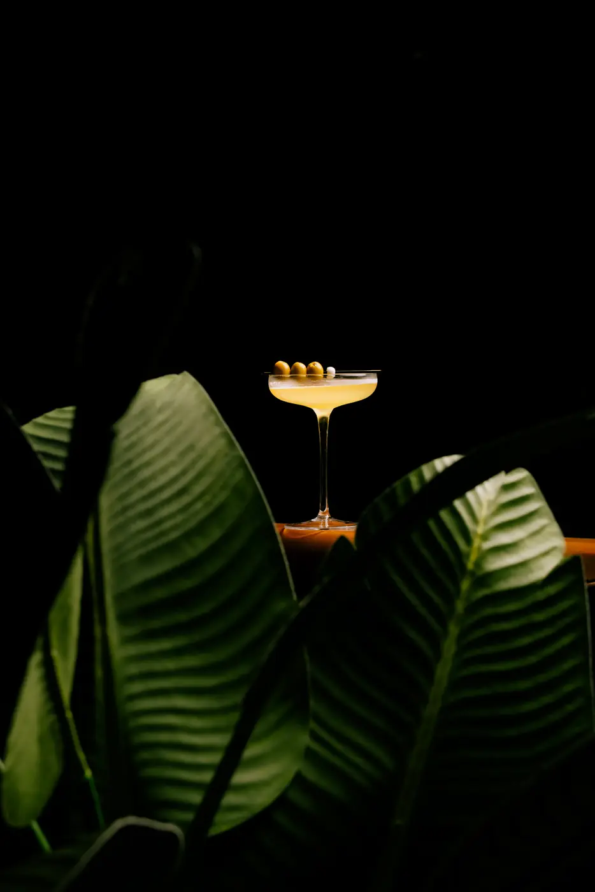
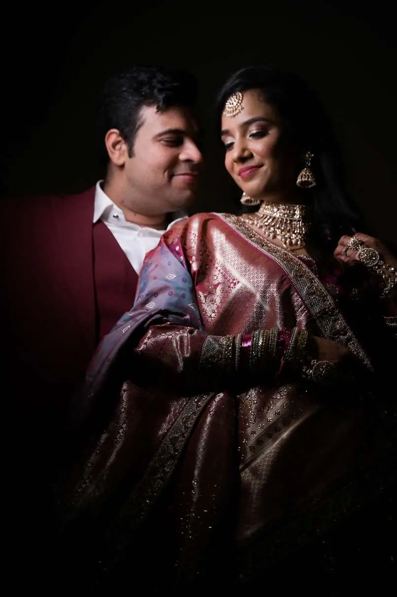
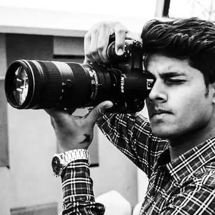

Photographer & cinematographer. Ex-VFX. Now I shoot the real thing.
REC Weddings · Commercial · Motion Indore → anywhere with good light
Yagyendra
Bagediya
[ who ]Shot, not rendered.
I spent three years at MAAC learning how to fake reality — keying out green screens, building worlds that never existed. Then I picked up a camera and found out the real thing was better.
[ what I shoot ]
Weddings, the long take
Beauty & fashion
Food & hospitality
Product & jewellery
Motion & behind the scenes
Shot in Indore↗


[ plate 01 — the darkroom ]move to develop
Every frame starts in black & white.
No green screen required. The light is real.
[ work — three chapters, one guy ]
I never could pick one trade. So I picked the frame.
The archive
Shot, not rendered. ✦ Lit by one window and a lot of patience. ✦ Rendered nothing. Felt everything. ✦
Shot, not rendered. ✦ Lit by one window and a lot of patience. ✦ Rendered nothing. Felt everything. ✦

[ the guy behind the camera ]
Hi, I'm Yagyendra.
I grew up taking on different trades and never settled on one. Seven years later I shoot weddings, food, fashion and film sets across India — anything with light worth chasing.
2019Finished school at National Public School
2019 — 22Diploma in Advanced VFX, MAAC
2022 — 25Freelance across animation and photography studios
NowWeddings, commercial and motion — under my own name